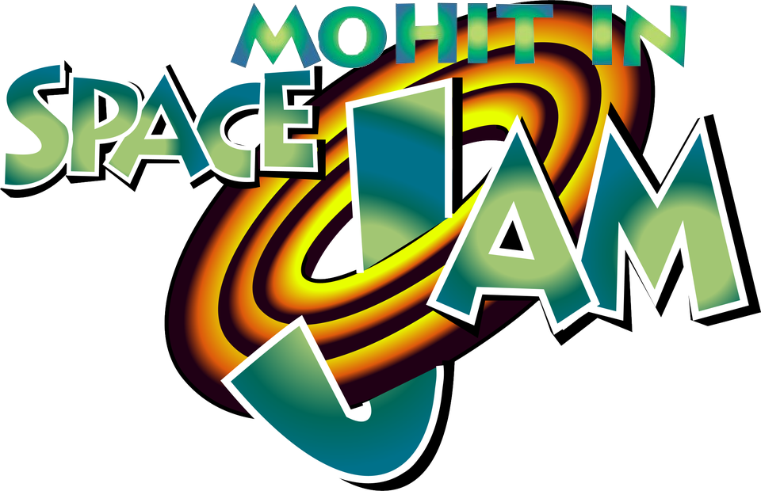

Go behind the scenes of one of the most over the top anniversary celebrations ever made. See the early prototypes! Witness the initial Slack pitch. Just kidding! We don't have time for all of that!
Website Credits
This chimeric abomination of a website was built by Amelie Zeng.
Song Credits
Mohit in Space Jam
Lyrics by: Amelie Zeng
Vocals by: Alexx Webb
Produced by: Alexx Webb
Production
Mohit was managed by: Josh Cohen
Slack posts were made by: Spencer Caton
This site is not affiliated with SPACE JAM and was created with the permission of absolutely nobody.